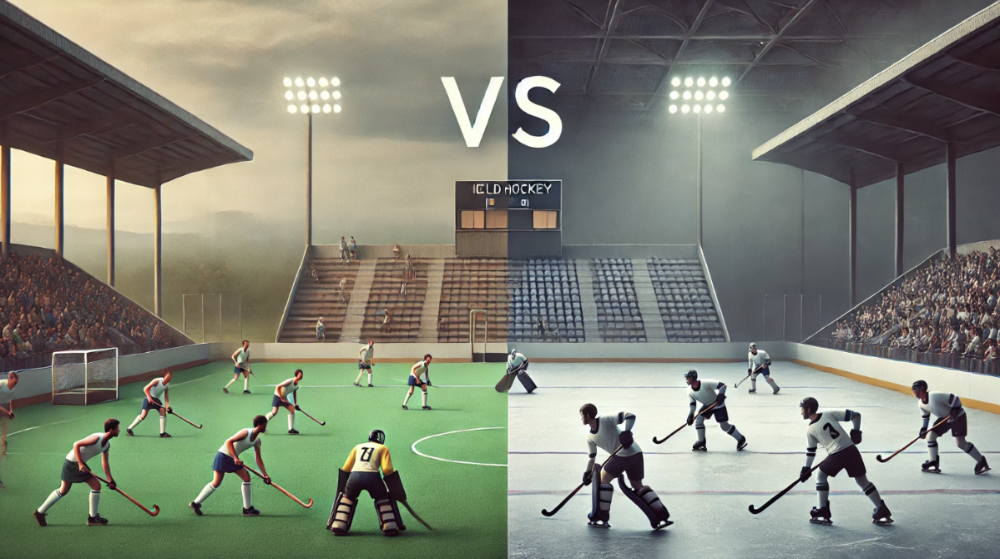

El hockey es un deporte de equipo que busca anotar más goles que el rival, utilizando un palo para dirigir una pelota o disco hacia la portería. Se juega en diferentes modalidades, como el hockey sobre césped y el hockey sobre hielo, que comparten principios básicos, pero varían en reglas, equipamiento y superficie de juego. Cada versión aporta un estilo único, siendo populares en diversas partes del mundo.
| Aspecto | Hockey sobre Césped | Hockey sobre Hielo |
| Jugadores por equipo | 11 jugadores, incluyendo un arquero. | 6 jugadores, incluyendo un arquero. |
| Superficie de juego | Cancha de césped natural o sintético. | Pista de hielo. |
| Equipamiento | Palo de hockey y una pelota pequeña y dura (bocha). | Palo de hockey, disco (puck) y patines de hielo. |
| Contacto físico | Contacto físico limitado; se enfocan más en la habilidad. | Contacto físico permitido; es un aspecto estratégico del juego. |
| Duración del partido | Dos tiempos de 35 minutos. | Tres períodos de 20 minutos. |
| Principales competencias | Mundiales y torneos regionales (Juegos Olímpicos de Verano). | Stanley Cup y Juegos Olímpicos de Invierno. |
| Popularidad | Más popular en países con climas cálidos y templados. | Muy popular en países con climas fríos. |
| Estilo de juego | Juego más lento y estratégico, con un énfasis en pases y posicionamiento. | Juego rápido y dinámico, con cambios rápidos de dirección y velocidad. |